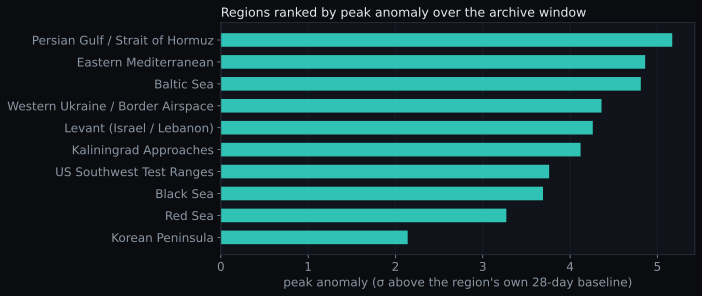
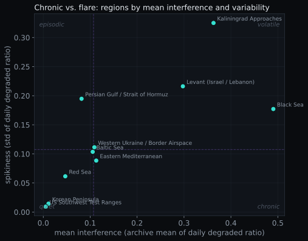
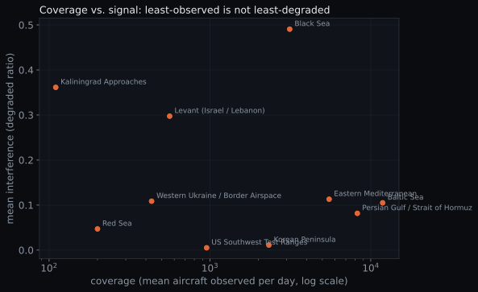
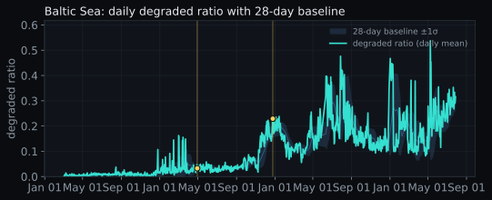
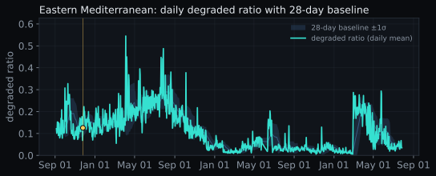
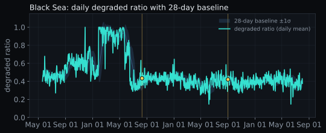
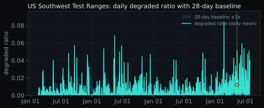
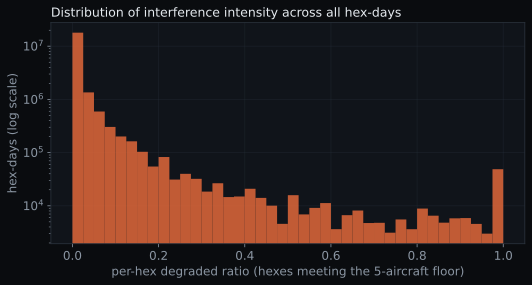

DRAFT SCAFFOLD. Charts, captions, and statistics are generated by
analysis/analyze.py; every WALKER block below is a prose
placeholder for you to author. Not linked in nav until you approve the prose.
1. The phenomenon
Walker Open narrative: invisible GPS jamming, why it matters,
and the turn that no purpose-built sensor drew the map. (Seed: the writeup_draft.md beat 1.)
2. What the archive adds
Walker The gap this fills: current-conditions maps exist; none
remembers. Memory, per-hex baselines, sourced context. (Seed: writeup_draft.md beat 6.)
3. The data, descriptively
Walker One or two framing sentences for the aggregate views below.
Mechanical captions state what each chart shows; interpretation is yours.

Regions ranked by peak anomaly, the largest single-day deviation above each region's
own 28-day rolling baseline, over the covered window.

Each region by mean interference (x) and day-to-day variability (y), split at the medians
into chronic, episodic, quiet, and volatile quadrants.
Walker The chronic-vs-flare framing is the analytical spine.
Describe the quadrants in your terms (no causal language).

Coverage (mean aircraft observed per day, log x) against mean interference (y), per region.
Walker Callout: least-observed is not least-degraded. Tie to the
sensor-desert paradox (deferred to the caveats section).
4. Region by region
Featured regions each carry their daily degraded-ratio series with a 28-day baseline band and
any in-window annotated events marked on that region's own line. The US Southwest test ranges are included
deliberately as the interpretive control case.
Baltic Sea

Walker 2–3 sourced sentences on the Baltic/Kaliningrad chronic signature.
Eastern Mediterranean

Walker 2–3 sourced sentences on the eastern-Med signature.
Black Sea

Walker 2–3 sourced sentences on the Black Sea signature.
US Southwest Test Ranges (control case)

Walker 2–3 sentences: identical reading, opposite meaning
(scheduled, published GPS-test exercises). This anchors the interpretive discipline.
All regions, at a glance
Mechanical reference rows for the remaining regions (no commentary).
Region
mean
peak
classification
events (in-window / total)
5. Honest caveats

Distribution of the per-hex degraded ratio across every hex-day meeting the five-aircraft floor
(log y). Most hex-days sit at or near zero.
Walker The three load-bearing caveats: the sensor-desert paradox
(we see edges, not interiors), the map being largely a nic=0 density surface, and why a continuous scale
preserves information that 3-bin thresholds discard. (Seed: writeup_draft.md beat 7 + METHODOLOGY.)
6. The lead/lag question (deferred)
This archive currently covers
( days) and annotated events, of which
fall inside the covered window. That is far too little to establish
whether interference leads or lags documented events. Any apparent timing relationship in the charts above
is illustrative only. No statistical significance is claimed and no p-values are computed on this sample.
This question is deferred until the backfill deepens.
Walker Frame the open question and why it is worth answering later,
keeping the guardrail above intact. No causal language.
7. What's next
Walker The research program: deeper backfill, spoofing layer,
lead/lag study, watchlist + calibration scorecard, per-region feeds. Open data, extend it. (Seed: the roadmap.)